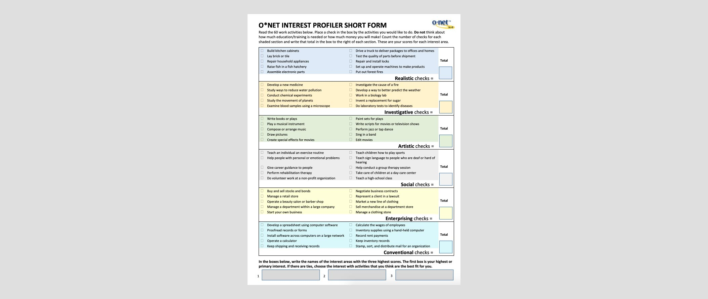

Design process
Identifying core functionality
Based on discussions with internal stakeholders and the requirements outlined by our partner, we planned to build out three user journeys, with the career discovery portal being a major feature. We felt this was the best way to address the needs of a wide segment of the user base who may find a job search with no guidance daunting. Because many of the users would be using this to search for new career paths it made more sense to directly address the needs of those with uncertainty about their future career prospects who were interested in future work opportunities based on their skills and interests. We also determined that a key functionality would be to deliver relevant job listings post-discovery, aggregated from Jobcase and other partners.
Research
To ensure accuracy of the results, I conducted a literature review of papers published by the U.S. Department of Labor around the different variants of the O*NET Interest Profiler. A longer, 60 question version of the quiz is provided but the 30 question version has a degree of accuracy high enough for us to feel like the trade-off on reducing the time until a user was able to see their results was appropriate. The O*NET uses the questions to score respondents on traits of Realistic, Investigative, Artistic, Social, Enterprising, and Conventional with questions about common tasks. The categories are based on research conducted in the 1950s by psychologist John L. Holland and have been used by the U.S. Department of Labor since the 1990s.
The O*NET service also provides the framework I used for the industries grid on the job browse page. This experience allows for users to explore careers in different industries as an alternative to the interest profiler and gave us a little more flexibility as far as design went because it didn’t rely on an API.

Explore career discovery approaches
The main feature of the experience is a career discovery quiz that lets users quickly answer 30 questions and receive career recommendations based upon their answers. With this restriction in mind, I designed 3 options for the quiz with the goal of meeting the requirements of an user experience that is fast, fun to use, and accurate. The accuracy scores are based on the usage of a 1 to 5 scale versus a boolean scale. After a review with stakeholders, we opted to move forward with the third option of quickly tapping through screens with a series of tiles, which struck the right balance between accuracy and speed.

Executing on the career discovery quiz
The logic of the career quiz is based upon the O*NET Interest Profiler so we were restricted by the limitations of their API, which delivers text, takes input, and returns results based on the information provided. Because of this, we had to move away from a visually rich interface and went with solid tiles for the experience.
Test Prototypes with Users
Using an InVision prototype and UserTesting.com I tested the job discovery with 5 different users in asynchronous testing environments (not moderated.) The insights helped steer the direction of the design and was valuable in correcting some assumptions we had made about communicating the purpose and context of the questions. For example, I originally thought that sorting the questions into pages by the traits outlined above made logical sense but this was more confusing than clarifying to our participants. Additionally, it was clear the visual feedback of changing the color of the selected row from dark to light wasn’t a sufficient indication that it was selected so that was changed to be more responsive.
Iterate and Execute
After dispositioning the feedback from the prototype users and our key stakeholders, I worked to arrive at a final design and coordinated with a content strategist to refine the language and instructions. With a hard deadline due to prearranged press commitments I worked closely with the engineering team responsible for building the experience to provide feedback and guidance on the design execution.